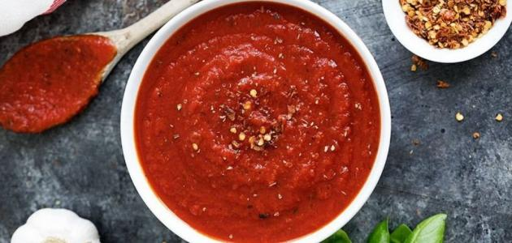

ذوبي الزبدة في مقلاة عميقة على نار متوسطة، وأضيفي إليها البصل، وغطي المقلاة، واتركيها على نار هادئة لمدة 15 دقيقة مع التقليب.
أضيفي الطحين مع التقليب المستمر، ثم اتركي الخليط على النار لمدة دقيقتين.
أضيفي خليط الطحين إلى مرق الدجاج مع التقليب المستمر واتركي المرق على النار ليغلي. وأضيفي ورق الغار للمرقة ثم خففي النار واتركيه على النار لمدة 15 دقيقة.
أضيفي قطع الدجاج المسلوقة، واتركيه على النار حتى الغليان، ثم ارفعي الشوربة من على النار.
أضيفي الكريمة، والملح، والفلفل الأسود للشوربة، وثم صبي الشوربة في أطباق التقديم، وزينيها بالبقدونس المفروم.
صوص البيتزا

المقادير
زيت الزيتون : 2 ملعقة كبيرة
الثوم : 3 فصوص (مهروس)
أوريغانو : 2 ملعقة كبيرة (طازج ومفروم ناعم)
شطة مجروشة : نصف ملعقة صغيرة
أوريغانو : نصف ملعقة صغيرة (مجفف)
طماطم : علبة (مهروسة)
ملح : ربع ملعقة صغيرة
سكر : نصف ملعقة صغيرة
طريقة التحضير
سخني زيت الزيتون في مقلاة واسعة على النار.
أضيفي الثوم وقلبي لمدة دقيقة.
أضيفي الأوريغانو الطازج وخففي النار واتركي المزيج لمدة دقيقتين.
أضيفي الأوريغانو المجفف والشطة المجروشة والطماطم واتركي المزيج حتى يبدأ بالغليان واتركي الخليط لمدة 40 دقيقة على نار منخفضة حتى يصبح المزيج سميكاً ويتسبك.
أضيفي الملح والسكر والفلفل الأسود، وارفعي المقلاة عن النار واتركيها لتبرد.